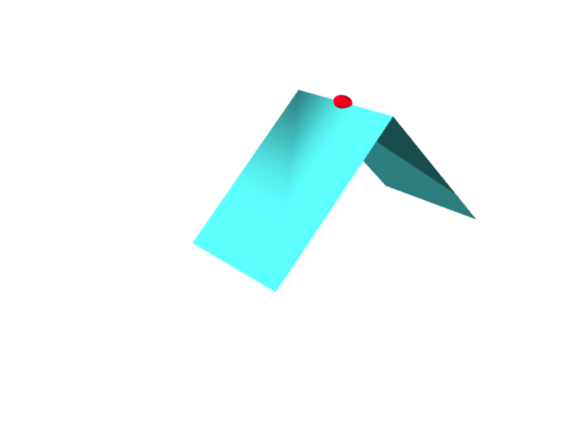

আমরা পৃথিবীর পিঠের উপর রয়েছি৷ ভূপৃষ্ঠটা মোটেই
সমতল নয়৷ অথচ আমাদের মনে হয় যেন সমতল৷ যেসব surface-এর বেলায় কোনো বিন্দুতে
এমন অনুভূতি হয়, সেই সমতলটাকে সেই বিন্দুতে সেই surface-এর tangent
plane বলে৷ যেমন $[-1,1]\times[-1,1]$-এর উপরে $f(x,y)=x^2+y^2$-এর surface-টার
tangent plane দেখিয়েছি $(0.5,0.5)$ বিন্দুতে৷
অনেকেরই একটা ভুল ধারণা থাকে যে, tangent plane হল এমন একটা plane যেটা সেই বিন্দুতে surface-টাকে
আলতো করে ছুঁয়ে থাকে মাত্র, ছেদ করতে পারে না৷ সেটা সঠিক ধারণা নয়৷ যেমন নীচের surface-টার বেলায়৷
এটুকু নিশ্চয়ই আন্দাজ করা যাচ্ছে যে tangent plane-র ধারণাটা অংকের ভাষায় প্রকাশ করার জন্য differentiation
লাগবে৷ বস্তুতঃ একটা surface-কে ''কোনো বিন্দুর ধারেকাছে দেখলে খালি একটা plane বলে মনে হয়''
এই ব্যাপারটা থেকেই তো ''function-টা ওই বিন্দুতে differentiable'' এই ধারণাটার জন্ম৷ যেমন নীচের
surface-টার বেলায় যে লাল বিন্দুতে কোনো tangent plane সম্ভব নয়, সেটা বোঝাই যাচ্ছে৷

এরকম ''বিচ্ছিরি'' কেস বাদ দিলে, সুন্দর সুন্দর কেসে কী হবে সেটা নিয়ে আমাদের কল্পনাটাকে ধাপে ধাপে বোঝালাম নীচে৷
কিন্তু সত্যিই স্বাভাবিক তো? নাকি কিছু গোলমাল হতে পারে? অবশ্যই, একটা গোলমাল হতে পারে এই যে, কোনো একটা partial derivative
না থাকতে পারে৷ কিন্তু তার মানে কোনো ভাঙা না খোঁচ আছে, সুতরাং সেরকম ক্ষেত্রে tangent plane থাকবেই না,
অতএব ঝামেলা হওয়াটাই উচিত৷ কিন্তু এমন হতে পারে না তো যে, tangent plane দিব্যি আছে কিন্তু এই কায়দাটা কাজ
করছে না? দুঃখের কথা, সেটা সম্ভব৷ যদি দুটো vector একই লাইন বরাবর হয়ে যায়৷ কারণ সেক্ষেত্রে ওদের মধ্যে
দিয়ে কোনো unique plane পাব না৷ এর মধ্যে একটা special case হল যেখানে অন্ততঃ একটা
vector আসলে zero vector. খুব দুঃখজনক একটা উদাহরণ হল $(u^3,v^3,u^3+v^3)$ দিয়ে
তৈরী surface-টা৷ $(0,0)$-তে দুটো tangent vector-ই zero vector.
কিন্তু তা বলে surface-টা কি সত্যিই বিচ্ছিরি কিছু? একটু ছবি আঁকার চেষ্টা করলে কী মনে হয়?
মন্তব্য
নীচে একটা মন্তব্য দেওয়ার জায়গা রয়েছে. দেখে মনে হবে যেন তার জন্য আগে log
in করতে হবে. যদি তাতে আপত্তি থাকে, তবে ওই "Name"-এর জায়গায় একবার
click করলেই "I'd rather post as a guest" বলে একটা option আসবে.